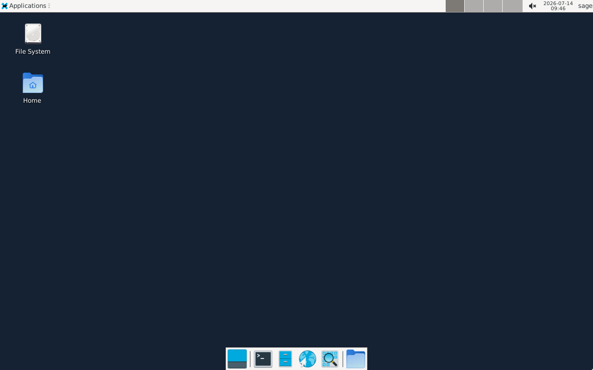
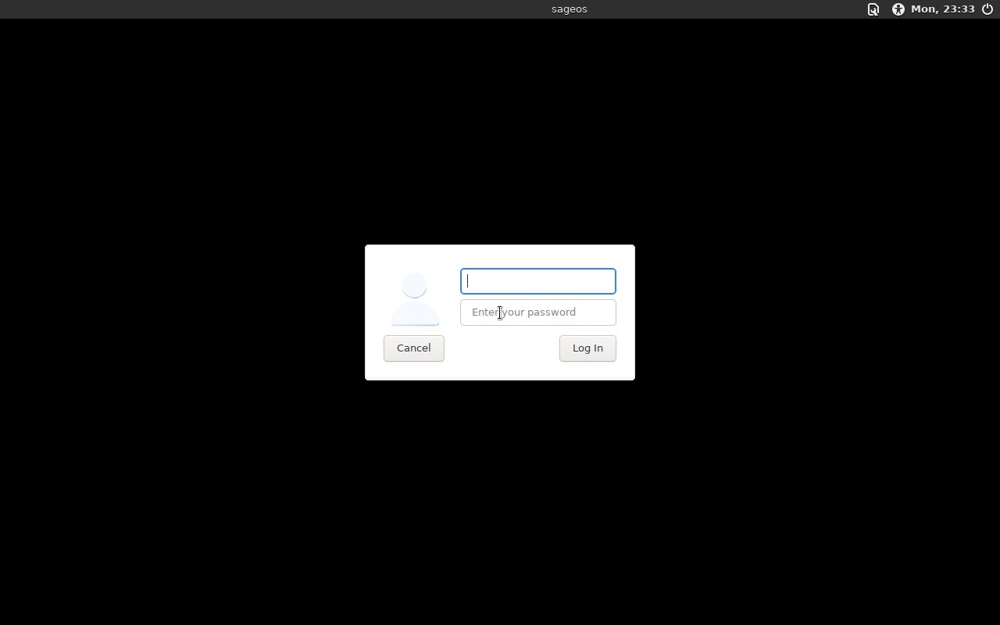

SageOS is a lean, Debian-based security distro built around mission packs — curated tool categories you install with one command. No bloated base image, no full reinstall just to get an update.
$ sage-pkg install web Fetching feroxbuster from epi052/feroxbuster... installed feroxbuster Done. 'Web Application Testing' tools are ready to use. $ sage-pkg update # checks the catalog, batches apt upgrades, re-fetches GitHub # binaries, upgrades pip tools — and updates sage-pkg itself, live Catalog updated to v1.1 — 1 new tool. sage-pkg is up to date.
Most security distros ship everything up front and go stale the day you burn the ISO. SageOS ships almost nothing by default — and every mission pack, and the tool that manages them, updates itself over the network.
Tools are grouped into categories — networking, web app testing, forensics, and more — installed on demand with sage-pkg install <pack>, not baked into a bloated base image.
sage-pkg pulls from apt, GitHub releases, and pip through a single interface — and lets any tool override its install method with a simple @apt/@fetch/@pip tag.
sage-pkg update batch-upgrades everything you've installed — apt in one call, fresh binaries re-fetched, pip packages bumped — and updates sage-pkg's own code from GitHub in the process.
The full tool catalog is versioned and published on its own page with a real changelog — see exactly what changed between catalog versions, no digging through commits.
Boots on OpenRC's dependency-based service management for a fast, predictable startup — mission packs that pull in systemd as a side dependency get automatically corrected back.
The base ISO is terminal-only by design. Want a desktop? sage-pkg install xfce — or grab the XFCE edition, which boots straight to a graphical login.
Same base system, same mission packs, with XFCE and lightdm pre-installed. These are actual screenshots from the live build — not stock photos.


Pick lean if you want to add packs yourself, or XFCE if you want a desktop out of the box. Both support x86_64 only, tested on QEMU and VirtualBox.
sage / sageos or root / sageosSee every mission pack and tool, pulled live from the versioned catalog on GitHub Pages.
Installs a whole category — apt packages, GitHub-release binaries, and pip tools — in one shot.
Upgrades everything installed, refreshes the catalog, and updates sage-pkg itself. No new ISO required.